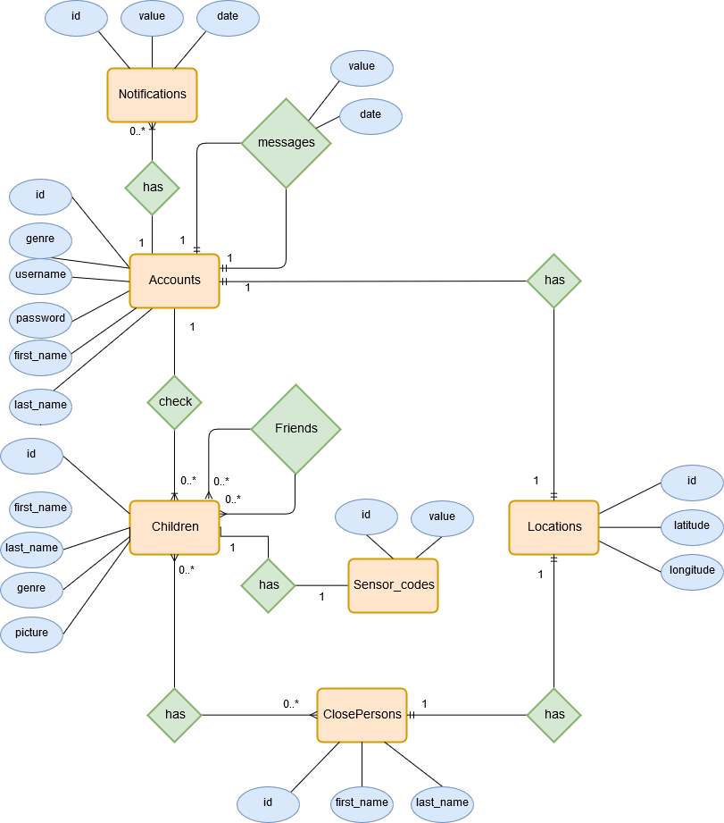

Kimo-Application
Andrieş Ştefania
Turcu Ana-Maria
Vararu Cristian
1. Introducere
Aplicația Kimo are ca scop siguranța copiilor, oferind părinților suport pentru monitorizarea acestora. Sunt
vizate atât aspecte privind locația, cât și împrejurările în care se află copilul. De asemenea aplicația
oferă suport pentru a comunica cu alți părinți utilizatori.
2. Diagrama Use-Case
Actori
• Utilizatorii umani
Aplicația este destinată persoanelor cu unul sau mai mulți copii având
utilitatea de a verifica în timp
real locatia acestora. Părintele poate adăuga copii pe care să ii monitorizeze prin intermediul aplicației,
dar
și alte persoane de interes pentru același copil. Mai există posibilitatea de a trimite mesaje către alți
părinți sau primirii unor notificări în situații deosebite.
• Baza de date
Aici vor fi stocate informații legate atât de cont cât și de copii din aplicație.
Se vor realiza interogări ale bazei de date pentru logare, trimitere de mesaje, etc. Tot prin
intermediul ei
se vor realiza și modificările cum ar fi modificarea datelor personale ale contului, schimbarea fotografiei
unui copil, adăugarea unui nou copil etc. Notificările și mesajele vor fi și ele stocate în baza de date de
unde vor fi trimise către utilizator. Atunci când un nou cont teste creat cu success el va fi adăugat în
baza de date.

Picture 1 Use-Case Diagram
3. Funcționalitățile aplicație
3.1 Înregistrare:
Orice persoană ce dorește să folosească aplicația pentru a-și monitoriza
copilul
are posibilitatea de a se înregistra. Pentru crearea contului sunt necesare următoarele informații: nume
și prenume părintelui, un username neutilizat și o parolă alese de părinte, coordonatele adresei, număr
de telefon, email și gen.
3.2 Logare:
Un utilizator poate accesa funcționalitățile aplicației doar după autentificare.
Această
operațiune va verifica existența contului unic și a parolei aferente în baza de date. După logare
utilizatorul va fi direcționat către pagina de Home.
3.3 Vizualizare copii:
Pe pagina de Home se va afișa lista copiilor înregistrați de pe un
cont.
Se
va
afișa imaginea de profil a copilului în cazul în care a fost setată, altfel o imagine implicită urmată
de numele acestuia.
3.4 Adăugare copil:
Un părinte poate înregistra un copil pe care să îl
monitorizeze
prin
intermediul
aplicației. La adăugare se vor folosi doar numele și prenumele copilului, eventual o poză de profil și
codul senzorului ce va transmite locația lui în timp real.
3.5 Vizualizare informații copil:
Aplicația va furniza o pagină de profil a fiecărui copil
supravegheat
ce va conține informații specific acestuia.
3.6 Vizualizare poziție copil pe hartă:
Pe pagina de profil a unui copil se va furniza o
hartă ce
indică poziția actuală a acestuia.
3.7 Adăugare persoană de interes:
Un utilizator are posibilitatea de a adăuga adresa și
numele
unor
persoane de interes alături de care copilul se află în siguranță. Verificarea distanței minime dintre
odraslă și alte locații sigure va include și adresele acestor persoane.
3.8 Vizualizare persoană de interes:
Lista persoanele de interes va putea fi vizualizată pe
pagina
fiecărui copil.
3.9 Vizualizare prieteni:
Dacă pruncul intră în contact cu alți copii înregistrați în
aplicație
aceștia
vor fi adăugați automat în lista de prieteni a acestuia, listă ce se va găsi deasemenea pe pagina de
destinată lui.
3.10 Schimbă fotografia copilului:
Imaginea de profil poate fi adăugată la înregistrarea
copiilor
sau
oricând altcândva. Există posibilitatea de schimbare sau înlăturare a acesteia.
3.11 Vizualizare profil prieten al copilului:
Profilul unui prieten constă în poza de profil
a
cestuia
și numele părintelui ce deține contul de pe care a fost înregistrat prietenul.
3.12 Trimite mesaj:
Un utilizator poate să trimită un mesaj către contul părintelui unui
prieten
al
copilului. Această funcționalitate poate fi găsită pe pagina de profil a prietenilor.
3.13 Vizualizare date personale:
Pe pagina de My Account sunt afișate datele personale
introduse
la
crearea contului.
3.14 Modificare date personale:
Tot pe pagina de My Account există posibilitatea de
modificare a
datelor personale introduse la crearea contului.
3.15 Vizualizare notificări pentru situații de urgență:
În cazul în care copilul se află
într-o
împrejurare periculoasă(s-a distanțat prea mult de persoanele de interes, sunt animale periculoase sau
un accident în apropiere, s-a lovit sau interacționează cu o persoană necunoscută) se vor emite
notificări specific către contul părintelui.
3.16 Vizualizare notificări de mesaje:
Mesajele vor fi primite ca și notificări și vor apărea
alături
de cele menționate mai sus.
3.17 Răspunde la mesaj:
Alături de vizualizarea unui mesaj există și opțiunea de răspundere,
selectarea
acesteia direcționând utilizatorul către pagina de profil a prietenului a cărui părinte a trimis acel
mesaj.
3.18 Delogare:
La sfârșitul utilizării aplicației, utilizatorul se deconecteză revenind pe
pagina
de
logare.
4. Task-uri pe fiecare membru
Picture 2 Task assign
5. Tehnologii folosite
5.1 Server:
- Limbaj de Programare: PHP
- Server Web: Apache
- Server Bază de date: MySql
5.2 Client:
6. Arhitectura aplicației
Picture 3 Diagrama de containere
Construcția aplicației se bazează pe modelul arhitectural MVC.
View-urile sunt reprezentate prin paginile HTML+CSS, fiecăruia corespunzându-i mai multe controlere.
Controlerele fac legătură între vizualizare și funcționalitățile aplicației descrise mai sus sau acțiunile
derulate automat la nivelul serverului prin interpretarea datelor primite de la senzor.
Picture 4 Diagrama MVC
7. Baza de date

Picture 5 Diagrama baza de date
8. Surse de date externe
Sensor Kid:
Realizat ca și un microserviciu PHP cu ajutorul API REST. Microserviciul va prelua
datele
din
formularul senzorului folosind POST, apoi le va transmite prin PUT la un URL de forma
http:localhost:”port”/sensor/id-kid. Aplicația va cere în mod continuu date pentru a afla locația și
starea
copilului pentru posibile procesări. Cererea va fi de forma http:localhost:”port”/sensor/id-kid, iar
răspunsul
va fi preluat în format JSON.
Google Map API:
Pentru afișarea hărții împreună cu locația actuală a copilului se va realiza
o
cerere
HTTPS inclusă într-un cod HTML asemănător :
< div class="mapouter">
< ; div class="gmap_canvas">< iframe width="600" height="500" id="gmap_canvas"
src="https://maps.google.com/maps?q=latitudine%20longitudine&t=&z=13&ie=UTF8&iwloc=&output=embed"
frameborder="0" scrolling="no" marginheight="0" marginwidth="0">< /iframe>< a
href="https://www.emojilib.com">emojilib.com< /a>< /div>
< style>
.mapouter {
position: relative;
text-align: right;
height: 500px;
width: 600px;
}
.gmap_canvas {
overflow: hidden;
background: none !important;
height: 500px;
width: 600px;
}
< /style>
< /div>
Cererea se va face către Embed Google Map API, generator de cod
HTML
pentru hărți Google pentru o
anumită locație(dată prin latitudine și longitudine).